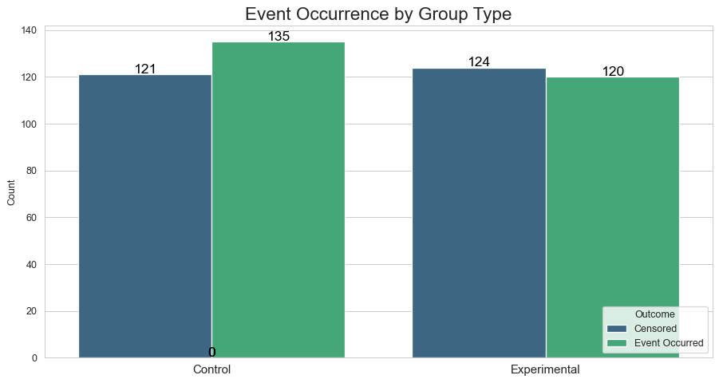
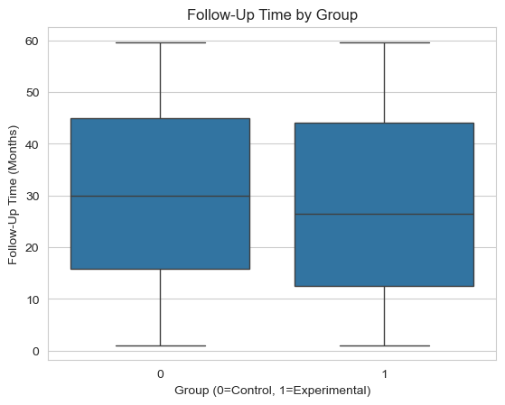
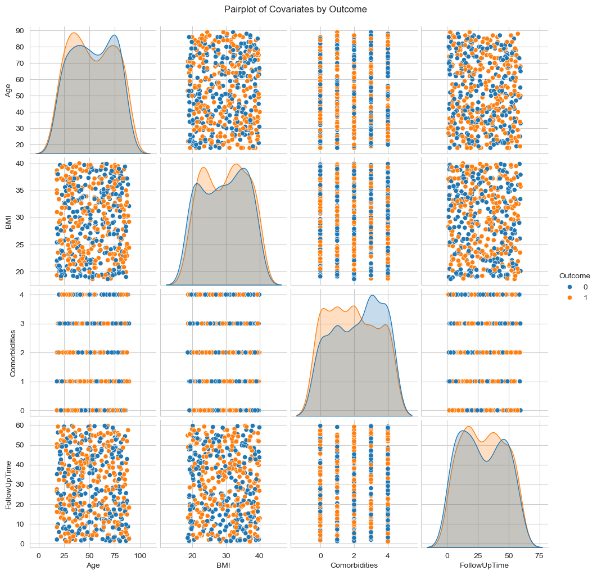
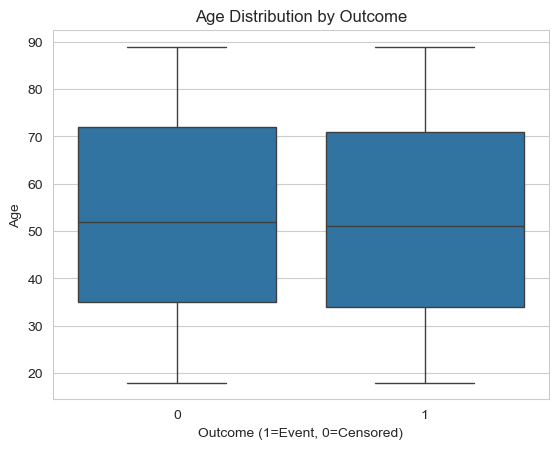
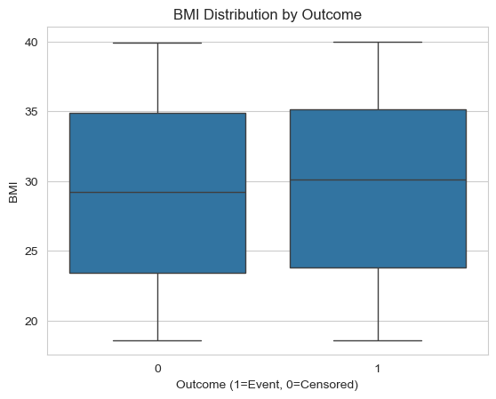
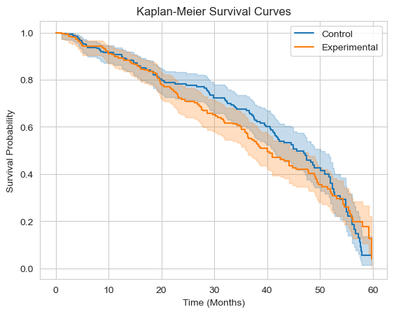
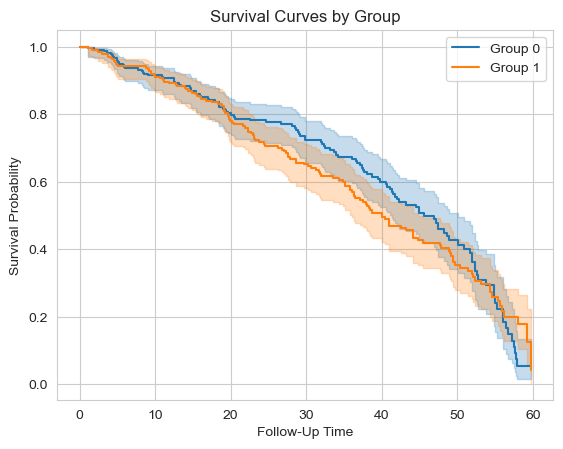
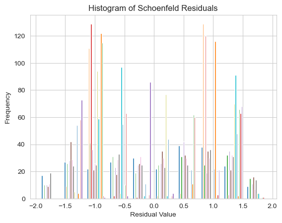

| PatientID | Group | Age | Gender | BMI | BloodPressure | Cholesterol | Glucose | SmokingStatus | PhysicalActivity | Comorbidities | Medications | FollowUpTime | Outcome | Education | RaceEthnicity | Income | MaritalStatus | EmploymentStatus | |
|---|---|---|---|---|---|---|---|---|---|---|---|---|---|---|---|---|---|---|---|
| 0 | 1 | 0 | 80 | Male | 37.9 | 165.4 | 129.5 | 95.3 | Never | High | 2 | 0 | 18.5 | 1 | Bachelor | Hispanic | 60-100K | Divorced | Employed |
| 1 | 2 | 1 | 49 | Female | 37.3 | 175.0 | 165.6 | 77.5 | Current | High | 2 | 1 | 10.6 | 0 | Bachelor | Black | >100K | Married | Retired |
| 2 | 3 | 0 | 50 | Male | 31.3 | 151.5 | 186.8 | 114.5 | Never | Low | 3 | 0 | 40.9 | 0 | High School | Black | >100K | Divorced | Employed |
| 3 | 4 | 0 | 84 | Male | 31.4 | 134.7 | 117.7 | 105.1 | Never | Low | 0 | 0 | 3.2 | 1 | High School | Other | >100K | Single | Employed |
| 4 | 5 | 0 | 35 | Female | 32.8 | 145.6 | 144.1 | 195.6 | Current | High | 2 | 1 | 37.6 | 1 | Master | Black | <30K | Widowed | Retired |
| 5 | 6 | 1 | 42 | Male | 22.3 | 168.2 | 219.6 | 142.5 | Former | Moderate | 4 | 1 | 42.2 | 0 | Bachelor | Black | <30K | Widowed | Retired |
| 6 | 7 | 0 | 71 | Male | 38.2 | 141.4 | 247.1 | 115.1 | Current | Low | 4 | 1 | 13.7 | 0 | Master | White | <30K | Single | Unemployed |
| 7 | 8 | 0 | 75 | Male | 27.5 | 92.7 | 299.7 | 145.5 | Current | Moderate | 3 | 0 | 3.5 | 0 | Master | Other | 60-100K | Divorced | Unemployed |
| 8 | 9 | 0 | 84 | Male | 26.7 | 173.8 | 286.6 | 88.1 | Current | Low | 0 | 1 | 22.5 | 1 | High School | Other | <30K | Divorced | Unemployed |
| 9 | 10 | 1 | 63 | Female | 29.7 | 152.1 | 228.5 | 127.7 | Former | Low | 0 | 1 | 6.8 | 0 | PhD | Black | <30K | Single | Unemployed |
Survivor Analysis Python Project
1 First Step: Let’s Create the mock the Dataset
2 Second Step: Let’s Explore the Dataset
2.1 Descriptive Stats
| Age | BMI | BloodPressure | Cholesterol | Glucose | FollowUpTime | |
|---|---|---|---|---|---|---|
| mean | 52.84 | 29.47 | 135.41 | 198.67 | 135.12 | 29.19 |
| std | 20.89 | 6.40 | 25.69 | 57.29 | 38.28 | 17.27 |
| min | 18.00 | 18.60 | 90.30 | 100.30 | 70.00 | 1.10 |
| 25% | 34.00 | 23.60 | 113.05 | 151.85 | 103.42 | 14.38 |
| 50% | 52.00 | 29.70 | 136.80 | 197.50 | 134.65 | 28.55 |
| 75% | 72.00 | 35.02 | 156.65 | 246.50 | 169.42 | 44.20 |
| max | 89.00 | 40.00 | 179.90 | 299.70 | 199.70 | 59.70 |
2.2 Demographics
Variable Category N Percentage
AgeGroup
Under 18 0 0.0
18-24 years old 51 10.2
25-34 years old 77 15.4
35-44 years old 75 15.0
45-54 years old 61 12.2
55-64 years old 60 12.0
65 or older 176 35.2
Gender
Female 239 47.8
Male 261 52.2
Education
Bachelor 137 27.4
High School 120 24.0
Master 109 21.8
PhD 134 26.8
RaceEthnicity
Asian 93 18.6
Black 108 21.6
Hispanic 97 19.4
Other 109 21.8
White 93 18.6
Income
30-60K 139 27.8
60-100K 121 24.2
<30K 127 25.4
>100K 113 22.6
MaritalStatus
Divorced 128 25.6
Married 122 24.4
Single 127 25.4
Widowed 123 24.6
EmploymentStatus
Employed 150 30.0
Retired 177 35.4
Unemployed 173 34.6
SmokingStatus
Current 165 33.0
Former 160 32.0
Never 175 35.0
PhysicalActivity
High 179 35.8
Low 151 30.2
Moderate 170 34.0
Comorbidities
0 96 19.2
1 98 19.6
2 97 19.4
3 104 20.8
4 105 21.02.3 Missing Values
PatientID 0
Group 0
Age 0
Gender 0
BMI 0
BloodPressure 0
Cholesterol 0
Glucose 0
SmokingStatus 0
PhysicalActivity 0
Comorbidities 0
Medications 0
FollowUpTime 0
Outcome 0
Education 0
RaceEthnicity 0
Income 0
MaritalStatus 0
EmploymentStatus 0
dtype: int642.4 Group Distribution

2.5 Follow-Up Time by Group

2.6 Covariates

2.7 Outcomes by Age and BMI


3 Third Step: Survivor Analysis of Experimental and Control Group
3.1 Kaplan-Meier Curves

3.2 Log-Rank Test
<lifelines.StatisticalResult: logrank_test>
t_0 = -1
null_distribution = chi squared
degrees_of_freedom = 1
test_name = logrank_test
---
test_statistic p -log2(p)
0.42 0.52 0.953.3 Cox Proportional Hazards Model: Check for Multicollinearity
Feature VIF
0 const NaN
1 PatientID 1.031726
2 Group 1.035117
3 Age 1.032283
4 Gender 1.054207
5 BMI 1.042135
6 BloodPressure 1.020399
7 Cholesterol 1.029551
8 Glucose 1.037837
9 SmokingStatus 1.036154
10 PhysicalActivity 1.053474
11 Comorbidities 1.052314
12 Medications 1.021336
13 Education 1.022416
14 RaceEthnicity 1.048298
15 Income 1.036021
16 MaritalStatus 1.045388
17 EmploymentStatus 1.048011
18 FollowUpTime 1.712549
19 Outcome 1.7329793.4 Cox Proportional Hazards Model: Check Infinte Values
const 0
PatientID 0
Group 0
Age 0
Gender 0
BMI 0
BloodPressure 0
Cholesterol 0
Glucose 0
SmokingStatus 0
PhysicalActivity 0
Comorbidities 0
Medications 0
Education 0
RaceEthnicity 0
Income 0
MaritalStatus 0
EmploymentStatus 0
FollowUpTime 0
Outcome 0
dtype: int64
const 0
PatientID 0
Group 0
Age 0
Gender 0
BMI 0
BloodPressure 0
Cholesterol 0
Glucose 0
SmokingStatus 0
PhysicalActivity 0
Comorbidities 0
Medications 0
Education 0
RaceEthnicity 0
Income 0
MaritalStatus 0
EmploymentStatus 0
FollowUpTime 0
Outcome 0
dtype: int643.5 Initialize and fit the Cox Proportional Hazards model
Iteration 1: norm_delta = 2.21e-01, step_size = 0.9500, log_lik = -1327.35045, newton_decrement = 6.82e+00, seconds_since_start = 0.0
Iteration 2: norm_delta = 8.35e-03, step_size = 0.9500, log_lik = -1320.64049, newton_decrement = 1.02e-02, seconds_since_start = 0.1
Iteration 3: norm_delta = 4.24e-04, step_size = 0.9500, log_lik = -1320.63034, newton_decrement = 2.62e-05, seconds_since_start = 0.1
Iteration 4: norm_delta = 2.40e-08, step_size = 1.0000, log_lik = -1320.63032, newton_decrement = 9.53e-14, seconds_since_start = 0.1
Convergence success after 4 iterations.
coef exp(coef) se(coef) coef lower 95% \
covariate
PatientID 0.017891 1.018052 0.057673 -0.095147
Group 0.027470 1.027851 0.059287 -0.088731
Age 0.021111 1.021336 0.059988 -0.096463
Gender 0.024839 1.025150 0.059020 -0.090839
BMI 0.065713 1.067920 0.059624 -0.051149
BloodPressure 0.043430 1.044387 0.056973 -0.068235
Cholesterol -0.001280 0.998721 0.060051 -0.118978
Glucose 0.003125 1.003130 0.059146 -0.112798
SmokingStatus -0.065860 0.936262 0.055772 -0.175171
PhysicalActivity 0.125096 1.133257 0.058294 0.010841
Comorbidities -0.111948 0.894091 0.058645 -0.226891
Medications -0.015634 0.984487 0.057895 -0.129106
Education 0.050015 1.051287 0.058423 -0.064492
MaritalStatus 0.050143 1.051422 0.060367 -0.068173
EmploymentStatus -0.017431 0.982720 0.059560 -0.134167
coef upper 95% exp(coef) lower 95% exp(coef) upper 95% \
covariate
PatientID 0.130929 0.909239 1.139886
Group 0.143671 0.915092 1.154504
Age 0.138685 0.908044 1.148762
Gender 0.140516 0.913165 1.150868
BMI 0.182574 0.950137 1.200303
BloodPressure 0.155095 0.934041 1.167769
Cholesterol 0.116419 0.887827 1.123467
Glucose 0.119049 0.893331 1.126425
SmokingStatus 0.043451 0.839314 1.044409
PhysicalActivity 0.239351 1.010900 1.270424
Comorbidities 0.002995 0.797008 1.002999
Medications 0.097838 0.878881 1.102784
Education 0.164523 0.937544 1.178831
MaritalStatus 0.168460 0.934099 1.183481
EmploymentStatus 0.099305 0.874444 1.104403
cmp to z p -log2(p)
covariate
PatientID 0.0 0.310208 0.756403 0.402773
Group 0.0 0.463340 0.643121 0.636839
Age 0.0 0.351926 0.724894 0.464159
Gender 0.0 0.420849 0.673865 0.569468
BMI 0.0 1.102112 0.270413 1.886763
BloodPressure 0.0 0.762291 0.445887 1.165251
Cholesterol 0.0 -0.021309 0.982999 0.024738
Glucose 0.0 0.052840 0.957859 0.062114
SmokingStatus 0.0 -1.180876 0.237652 2.073079
PhysicalActivity 0.0 2.145935 0.031878 4.971288
Comorbidities 0.0 -1.908900 0.056275 4.151362
Medications 0.0 -0.270045 0.787126 0.345334
Education 0.0 0.856088 0.391949 1.351261
MaritalStatus 0.0 0.830647 0.406173 1.299833
EmploymentStatus 0.0 -0.292664 0.769779 0.377484 4 Fourth Step: Model Validation and Sensitiviy Analysis
4.1 Model Validation
covariate PatientID Group Age Gender BMI BloodPressure \
289 0.260823 0.939134 -1.131451 -0.970501 1.116561 -0.230472
442 1.320840 -1.061442 -1.275173 1.031437 -0.260495 1.670712
189 -0.432768 0.943606 0.979582 1.039508 1.068002 -0.409806
74 -1.239359 -1.047581 -0.835946 1.039990 -0.783947 1.465723
56 -1.368195 0.953607 0.836305 1.046399 0.673628 -0.603815
covariate Cholesterol Glucose SmokingStatus PhysicalActivity \
289 1.385313 1.674101 -1.113951 1.223827
442 0.672464 1.145871 0.108565 -0.862061
189 -1.461020 1.589793 1.326780 1.223479
74 0.208752 -1.234285 0.102925 1.231311
56 -0.871949 1.548478 -1.113243 1.224259
covariate Comorbidities Medications Education MaritalStatus \
289 0.070170 0.967612 -0.993463 -0.462838
442 1.480968 -1.033685 1.276660 1.326042
189 -1.338596 0.968266 -0.997465 1.328285
74 -1.341011 0.973654 -0.998420 -1.356827
56 0.770485 -1.021119 1.268430 -0.467605
covariate EmploymentStatus
289 1.187289
442 -0.052025
189 -0.050001
74 1.192341
56 -0.049878 4.2 Log-Log Survival Plot

4.3 C-Index
C-index: 0.58448837993672014.4 Residuals Analysis

4.5 Sensitiviy Analysis
Penalizer: 0.01
coef exp(coef) se(coef) coef lower 95% \
covariate
PatientID 0.020774 1.020991 0.062808 -0.102327
Group 0.031319 1.031815 0.065136 -0.096345
Age 0.022836 1.023099 0.065818 -0.106165
Gender 0.030595 1.031067 0.064656 -0.096128
BMI 0.077610 1.080701 0.065577 -0.050919
BloodPressure 0.050420 1.051713 0.061929 -0.070959
Cholesterol -0.006935 0.993089 0.066006 -0.136306
Glucose 0.003600 1.003606 0.064876 -0.123554
SmokingStatus -0.074992 0.927751 0.060286 -0.193151
PhysicalActivity 0.150421 1.162323 0.063165 0.026619
Comorbidities -0.133983 0.874605 0.064268 -0.259946
Medications -0.019462 0.980726 0.062937 -0.142817
Education 0.058498 1.060243 0.063864 -0.066672
MaritalStatus 0.068355 1.070745 0.066584 -0.062146
EmploymentStatus -0.020588 0.979623 0.065334 -0.148640
coef upper 95% exp(coef) lower 95% exp(coef) upper 95% \
covariate
PatientID 0.143876 0.902734 1.154741
Group 0.158984 0.908150 1.172319
Age 0.151837 0.899276 1.163970
Gender 0.157318 0.908347 1.170367
BMI 0.206139 0.950356 1.228924
BloodPressure 0.171799 0.931500 1.187439
Cholesterol 0.122435 0.872576 1.130245
Glucose 0.130754 0.883774 1.139687
SmokingStatus 0.043167 0.824358 1.044112
PhysicalActivity 0.274222 1.026977 1.315507
Comorbidities -0.008019 0.771093 0.992013
Medications 0.103892 0.866913 1.109480
Education 0.183669 0.935502 1.201619
MaritalStatus 0.198856 0.939745 1.220007
EmploymentStatus 0.107464 0.861879 1.113451
cmp to z p -log2(p)
covariate
PatientID 0.0 0.330757 0.740828 0.432789
Group 0.0 0.480828 0.630639 0.665114
Age 0.0 0.346954 0.728626 0.456750
Gender 0.0 0.473193 0.636076 0.652730
BMI 0.0 1.183493 0.236614 2.079393
BloodPressure 0.0 0.814161 0.415553 1.266897
Cholesterol 0.0 -0.105072 0.916319 0.126078
Glucose 0.0 0.055487 0.955750 0.065294
SmokingStatus 0.0 -1.243934 0.213524 2.227531
PhysicalActivity 0.0 2.381389 0.017247 5.857471
Comorbidities 0.0 -2.084746 0.037092 4.752732
Medications 0.0 -0.309236 0.757142 0.401364
Education 0.0 0.915987 0.359674 1.475239
MaritalStatus 0.0 1.026604 0.304607 1.714979
EmploymentStatus 0.0 -0.315116 0.752673 0.409904
Penalizer: 0.1
coef exp(coef) se(coef) coef lower 95% \
covariate
PatientID 0.017891 1.018052 0.057673 -0.095147
Group 0.027470 1.027851 0.059287 -0.088731
Age 0.021111 1.021336 0.059988 -0.096463
Gender 0.024839 1.025150 0.059020 -0.090839
BMI 0.065713 1.067920 0.059624 -0.051149
BloodPressure 0.043430 1.044387 0.056973 -0.068235
Cholesterol -0.001280 0.998721 0.060051 -0.118978
Glucose 0.003125 1.003130 0.059146 -0.112798
SmokingStatus -0.065860 0.936262 0.055772 -0.175171
PhysicalActivity 0.125096 1.133257 0.058294 0.010841
Comorbidities -0.111948 0.894091 0.058645 -0.226891
Medications -0.015634 0.984487 0.057895 -0.129106
Education 0.050015 1.051287 0.058423 -0.064492
MaritalStatus 0.050143 1.051422 0.060367 -0.068173
EmploymentStatus -0.017431 0.982720 0.059560 -0.134167
coef upper 95% exp(coef) lower 95% exp(coef) upper 95% \
covariate
PatientID 0.130929 0.909239 1.139886
Group 0.143671 0.915092 1.154504
Age 0.138685 0.908044 1.148762
Gender 0.140516 0.913165 1.150868
BMI 0.182574 0.950137 1.200303
BloodPressure 0.155095 0.934041 1.167769
Cholesterol 0.116419 0.887827 1.123467
Glucose 0.119049 0.893331 1.126425
SmokingStatus 0.043451 0.839314 1.044409
PhysicalActivity 0.239351 1.010900 1.270424
Comorbidities 0.002995 0.797008 1.002999
Medications 0.097838 0.878881 1.102784
Education 0.164523 0.937544 1.178831
MaritalStatus 0.168460 0.934099 1.183481
EmploymentStatus 0.099305 0.874444 1.104403
cmp to z p -log2(p)
covariate
PatientID 0.0 0.310208 0.756403 0.402773
Group 0.0 0.463340 0.643121 0.636839
Age 0.0 0.351926 0.724894 0.464159
Gender 0.0 0.420849 0.673865 0.569468
BMI 0.0 1.102112 0.270413 1.886763
BloodPressure 0.0 0.762291 0.445887 1.165251
Cholesterol 0.0 -0.021309 0.982999 0.024738
Glucose 0.0 0.052840 0.957859 0.062114
SmokingStatus 0.0 -1.180876 0.237652 2.073079
PhysicalActivity 0.0 2.145935 0.031878 4.971288
Comorbidities 0.0 -1.908900 0.056275 4.151362
Medications 0.0 -0.270045 0.787126 0.345334
Education 0.0 0.856088 0.391949 1.351261
MaritalStatus 0.0 0.830647 0.406173 1.299833
EmploymentStatus 0.0 -0.292664 0.769779 0.377484
Penalizer: 1.0
coef exp(coef) se(coef) coef lower 95% \
covariate
PatientID 0.007487 1.007515 0.036339 -0.063737
Group 0.012529 1.012608 0.036596 -0.059197
Age 0.010502 1.010558 0.036880 -0.061782
Gender 0.008742 1.008780 0.036573 -0.062939
BMI 0.027403 1.027782 0.036610 -0.044351
BloodPressure 0.018975 1.019156 0.036116 -0.051811
Cholesterol 0.005099 1.005112 0.036848 -0.067122
Glucose 0.000594 1.000595 0.036625 -0.071189
SmokingStatus -0.029269 0.971155 0.035893 -0.099618
PhysicalActivity 0.046276 1.047363 0.036774 -0.025800
Comorbidities -0.043833 0.957113 0.036457 -0.115288
Medications -0.004964 0.995048 0.036469 -0.076442
Education 0.020247 1.020454 0.036493 -0.051278
MaritalStatus 0.010270 1.010323 0.036786 -0.061830
EmploymentStatus -0.007586 0.992443 0.036740 -0.079595
coef upper 95% exp(coef) lower 95% exp(coef) upper 95% \
covariate
PatientID 0.078711 0.938252 1.081892
Group 0.084256 0.942521 1.087907
Age 0.082787 0.940088 1.086310
Gender 0.080423 0.939000 1.083745
BMI 0.099157 0.956618 1.104240
BloodPressure 0.089762 0.949508 1.093914
Cholesterol 0.077320 0.935081 1.080387
Glucose 0.072378 0.931286 1.075062
SmokingStatus 0.041079 0.905183 1.041934
PhysicalActivity 0.118352 0.974530 1.125640
Comorbidities 0.027621 0.891109 1.028006
Medications 0.066514 0.926407 1.068776
Education 0.091773 0.950014 1.096116
MaritalStatus 0.082369 0.940043 1.085856
EmploymentStatus 0.064424 0.923490 1.066545
cmp to z p -log2(p)
covariate
PatientID 0.0 0.206031 0.836767 0.257103
Group 0.0 0.342368 0.732074 0.449938
Age 0.0 0.284769 0.775821 0.366204
Gender 0.0 0.239021 0.811090 0.302067
BMI 0.0 0.748518 0.454148 1.138767
BloodPressure 0.0 0.525391 0.599312 0.738622
Cholesterol 0.0 0.138370 0.889948 0.168207
Glucose 0.0 0.016230 0.987051 0.018804
SmokingStatus 0.0 -0.815473 0.414802 1.269506
PhysicalActivity 0.0 1.258379 0.208255 2.263578
Comorbidities 0.0 -1.202328 0.229236 2.125092
Medications 0.0 -0.136116 0.891730 0.165321
Education 0.0 0.554818 0.579019 0.788317
MaritalStatus 0.0 0.279172 0.780113 0.358246
EmploymentStatus 0.0 -0.206463 0.836430 0.257684 4.6 Model Re-specification with Interaction Terms
coef exp(coef) se(coef) coef lower 95% \
covariate
PatientID 0.006291 1.006311 0.058243 -0.107863
Group 0.018790 1.018967 0.059425 -0.097681
Age 0.015338 1.015456 0.059972 -0.102205
Gender 0.013682 1.013776 0.059179 -0.102306
BMI 0.057375 1.059052 0.059847 -0.059923
BloodPressure 0.045101 1.046134 0.056953 -0.066524
Cholesterol 0.003012 1.003017 0.060143 -0.114865
Glucose -0.001482 0.998520 0.059106 -0.117327
SmokingStatus -0.060968 0.940853 0.055824 -0.170382
PhysicalActivity 0.123825 1.131818 0.058375 0.009411
Comorbidities -0.111560 0.894438 0.058698 -0.226605
Medications -0.024089 0.976198 0.058017 -0.137801
Education 0.039966 1.040775 0.058829 -0.075336
MaritalStatus 0.047822 1.048984 0.060303 -0.070370
EmploymentStatus -0.020991 0.979228 0.059523 -0.137654
Age_BMI -0.135653 0.873145 0.061027 -0.255264
coef upper 95% exp(coef) lower 95% exp(coef) upper 95% \
covariate
PatientID 0.120444 0.897751 1.127998
Group 0.135260 0.906938 1.144835
Age 0.132881 0.902845 1.142114
Gender 0.129670 0.902753 1.138453
BMI 0.174673 0.941837 1.190856
BloodPressure 0.156727 0.935640 1.169676
Cholesterol 0.120890 0.891487 1.128500
Glucose 0.114363 0.889295 1.121159
SmokingStatus 0.048445 0.843343 1.049638
PhysicalActivity 0.238239 1.009456 1.269012
Comorbidities 0.003486 0.797235 1.003492
Medications 0.089622 0.871272 1.093761
Education 0.155268 0.927432 1.167971
MaritalStatus 0.166014 0.932049 1.180589
EmploymentStatus 0.095672 0.871400 1.100399
Age_BMI -0.016043 0.774712 0.984085
cmp to z p -log2(p)
covariate
PatientID 0.0 0.108009 0.913989 0.129752
Group 0.0 0.316193 0.751856 0.411472
Age 0.0 0.255755 0.798140 0.325286
Gender 0.0 0.231202 0.817158 0.291313
BMI 0.0 0.958688 0.337716 1.566118
BloodPressure 0.0 0.791903 0.428417 1.222912
Cholesterol 0.0 0.050088 0.960052 0.058815
Glucose 0.0 -0.025067 0.980002 0.029144
SmokingStatus 0.0 -1.092146 0.274769 1.863708
PhysicalActivity 0.0 2.121186 0.033906 4.882310
Comorbidities 0.0 -1.900577 0.057357 4.123876
Medications 0.0 -0.415212 0.677987 0.560671
Education 0.0 0.679363 0.496908 1.008949
MaritalStatus 0.0 0.793021 0.427765 1.225109
EmploymentStatus 0.0 -0.352651 0.724350 0.465241
Age_BMI 0.0 -2.222847 0.026226 5.252852 4.7 Outlier Detection
Model summary with outliers:
coef exp(coef) se(coef) coef lower 95% \
covariate
PatientID 0.000108 1.000108 0.000398 -0.000673
Group 0.019433 1.019623 0.119096 -0.213990
Age 0.001142 1.001143 0.002873 -0.004488
Gender 0.057489 1.059173 0.119616 -0.176955
BMI 0.011804 1.011874 0.009323 -0.006469
BloodPressure 0.002191 1.002193 0.002240 -0.002200
Cholesterol 0.000086 1.000086 0.001050 -0.001971
Glucose 0.000105 1.000105 0.001548 -0.002929
SmokingStatus -0.078738 0.924283 0.068566 -0.213125
PhysicalActivity 0.291563 1.338518 0.122328 0.051805
Comorbidities -0.082035 0.921240 0.041498 -0.163370
Medications -0.028585 0.971820 0.116322 -0.256572
Education 0.032876 1.033422 0.044288 -0.053926
RaceEthnicity 0.098645 1.103675 0.041784 0.016751
Income 0.077888 1.081002 0.052825 -0.025647
MaritalStatus 0.042182 1.043084 0.054279 -0.064202
EmploymentStatus -0.011461 0.988605 0.074028 -0.156553
coef upper 95% exp(coef) lower 95% exp(coef) upper 95% \
covariate
PatientID 0.000889 0.999328 1.000890
Group 0.252856 0.807356 1.287698
Age 0.006773 0.995522 1.006796
Gender 0.291932 0.837817 1.339012
BMI 0.030078 0.993552 1.030534
BloodPressure 0.006582 0.997803 1.006603
Cholesterol 0.002143 0.998031 1.002146
Glucose 0.003138 0.997076 1.003143
SmokingStatus 0.055650 0.808055 1.057228
PhysicalActivity 0.531321 1.053170 1.701178
Comorbidities -0.000701 0.849277 0.999299
Medications 0.199403 0.773699 1.220673
Education 0.119678 0.947502 1.127134
RaceEthnicity 0.180540 1.016892 1.197864
Income 0.181424 0.974679 1.198924
MaritalStatus 0.148566 0.937816 1.160169
EmploymentStatus 0.133632 0.855086 1.142972
cmp to z p -log2(p)
covariate
PatientID 0.0 0.272112 0.785536 0.348251
Group 0.0 0.163172 0.870383 0.200277
Age 0.0 0.397664 0.690878 0.533497
Gender 0.0 0.480608 0.630795 0.664757
BMI 0.0 1.266146 0.205461 2.283064
BloodPressure 0.0 0.978010 0.328069 1.607928
Cholesterol 0.0 0.082169 0.934512 0.097714
Glucose 0.0 0.067629 0.946081 0.079965
SmokingStatus 0.0 -1.148339 0.250829 1.995225
PhysicalActivity 0.0 2.383457 0.017151 5.865571
Comorbidities 0.0 -1.976852 0.048058 4.379067
Medications 0.0 -0.245736 0.805886 0.311352
Education 0.0 0.742327 0.457889 1.126930
RaceEthnicity 0.0 2.360870 0.018232 5.777372
Income 0.0 1.474451 0.140360 2.832795
MaritalStatus 0.0 0.777140 0.437076 1.194043
EmploymentStatus 0.0 -0.154813 0.876969 0.189403
Model summary without outliers:
coef exp(coef) se(coef) coef lower 95% \
covariate
PatientID 0.000108 1.000108 0.000398 -0.000673
Group 0.019433 1.019623 0.119096 -0.213990
Age 0.001142 1.001143 0.002873 -0.004488
Gender 0.057489 1.059173 0.119616 -0.176955
BMI 0.011804 1.011874 0.009323 -0.006469
BloodPressure 0.002191 1.002193 0.002240 -0.002200
Cholesterol 0.000086 1.000086 0.001050 -0.001971
Glucose 0.000105 1.000105 0.001548 -0.002929
SmokingStatus -0.078738 0.924283 0.068566 -0.213125
PhysicalActivity 0.291563 1.338518 0.122328 0.051805
Comorbidities -0.082035 0.921240 0.041498 -0.163370
Medications -0.028585 0.971820 0.116322 -0.256572
Education 0.032876 1.033422 0.044288 -0.053926
RaceEthnicity 0.098645 1.103675 0.041784 0.016751
Income 0.077888 1.081002 0.052825 -0.025647
MaritalStatus 0.042182 1.043084 0.054279 -0.064202
EmploymentStatus -0.011461 0.988605 0.074028 -0.156553
coef upper 95% exp(coef) lower 95% exp(coef) upper 95% \
covariate
PatientID 0.000889 0.999328 1.000890
Group 0.252856 0.807356 1.287698
Age 0.006773 0.995522 1.006796
Gender 0.291932 0.837817 1.339012
BMI 0.030078 0.993552 1.030534
BloodPressure 0.006582 0.997803 1.006603
Cholesterol 0.002143 0.998031 1.002146
Glucose 0.003138 0.997076 1.003143
SmokingStatus 0.055650 0.808055 1.057228
PhysicalActivity 0.531321 1.053170 1.701178
Comorbidities -0.000701 0.849277 0.999299
Medications 0.199403 0.773699 1.220673
Education 0.119678 0.947502 1.127134
RaceEthnicity 0.180540 1.016892 1.197864
Income 0.181424 0.974679 1.198924
MaritalStatus 0.148566 0.937816 1.160169
EmploymentStatus 0.133632 0.855086 1.142972
cmp to z p -log2(p)
covariate
PatientID 0.0 0.272112 0.785536 0.348251
Group 0.0 0.163172 0.870383 0.200277
Age 0.0 0.397664 0.690878 0.533497
Gender 0.0 0.480608 0.630795 0.664757
BMI 0.0 1.266146 0.205461 2.283064
BloodPressure 0.0 0.978010 0.328069 1.607928
Cholesterol 0.0 0.082169 0.934512 0.097714
Glucose 0.0 0.067629 0.946081 0.079965
SmokingStatus 0.0 -1.148339 0.250829 1.995225
PhysicalActivity 0.0 2.383457 0.017151 5.865571
Comorbidities 0.0 -1.976852 0.048058 4.379067
Medications 0.0 -0.245736 0.805886 0.311352
Education 0.0 0.742327 0.457889 1.126930
RaceEthnicity 0.0 2.360870 0.018232 5.777372
Income 0.0 1.474451 0.140360 2.832795
MaritalStatus 0.0 0.777140 0.437076 1.194043
EmploymentStatus 0.0 -0.154813 0.876969 0.189403